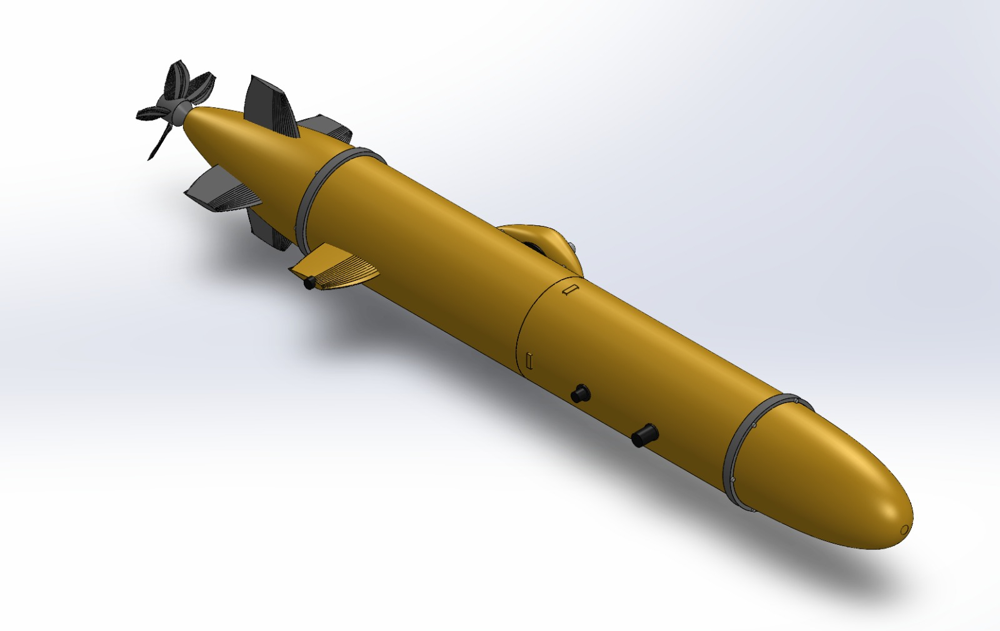
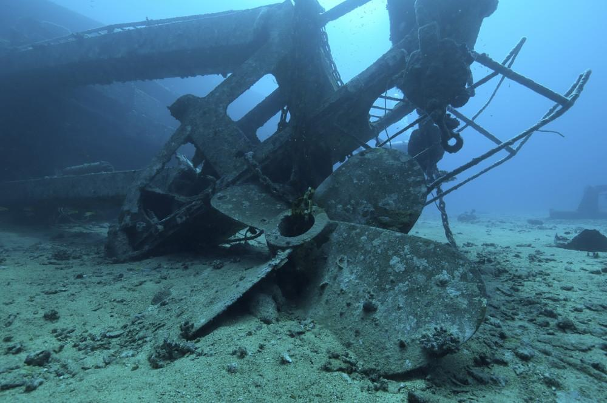
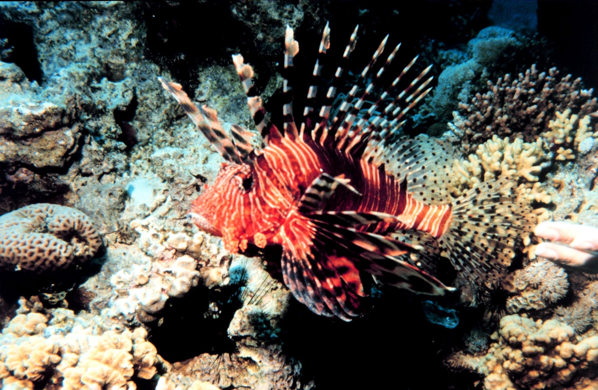
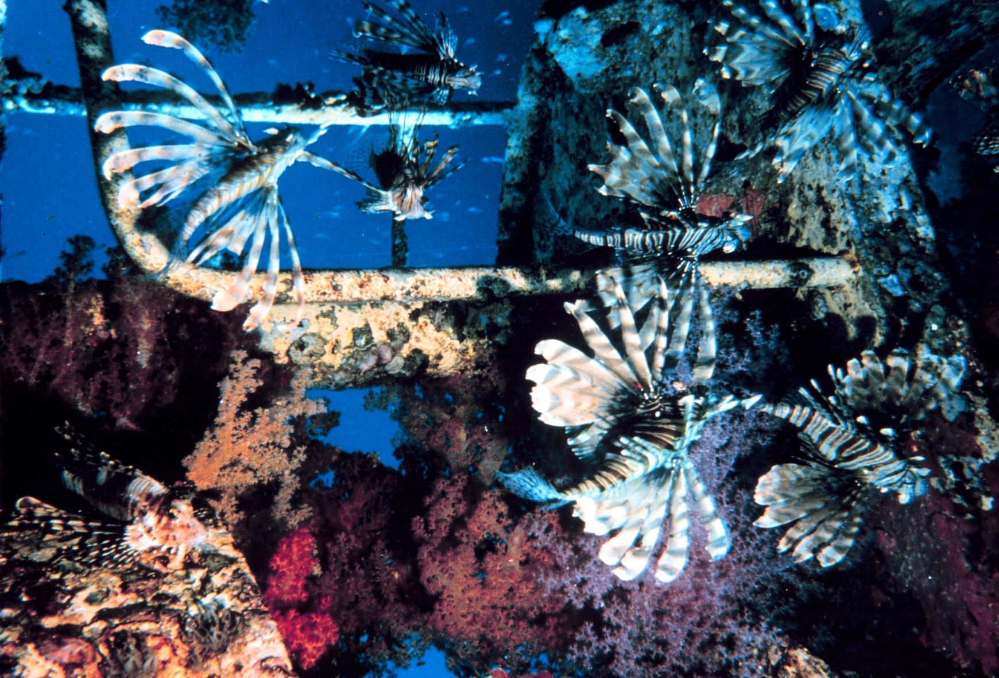

AUV
Autonomous Underwater Vehicle
An autonomous underwater platform designed for marine observation, object identification, and decision support.

- Operating scope
- 1–5 m below the water surface
- Sensing
- Underwater camera, multibeam echosounder and water-column acoustic data
- Output
- Classified targets, marked for operator inspection
About the AUV
An autonomous underwater vehicle built around the team's own design. It surveys shallow marine environments, detects objects in the water, and helps an operator decide which of them need a closer look.
The problem
Shallow coastal waters hold marine life, natural features and man-made objects side by side. Wrecks, debris and equipment matter for safety and for protecting the marine environment, but they are hard to tell apart from their surroundings.
Divers can inspect an area directly, yet their time and reach are limited. Cameras depend on light and water clarity; acoustic sensors work in poor visibility but give less visual detail. No single sensor answers the question “what is this object?” on its own.
What the system does
The AUV combines acoustic and visual sensing, analyses every detected target, classifies it, and recommends whether it needs inspection. Targets are marked and reported to the operator at the surface.

Operating environment
The AUV operates in a marine environment, 1–5 metres below the water surface.
How it works
From the water to the operator: the AUV senses its surroundings, finds targets, analyses and classifies them, and supports the inspection decision.
Underwater Environment
The marine setting the AUV surveys, 1–5 m below the surface.
Sensor Data
Camera imagery, multibeam echosounder data and water-column acoustic data.
Target Detection
Candidate objects are found in the sensor data.
Object Analysis
Shape, geometry, structural appearance and movement are examined.
Classification
Each target is classed as marine life, a potential man-made object, or a natural or unidentified object.
Decision Support
An inspection decision and an inspection priority are suggested.
Target Marking
The target is given an ID and marked at its position.
Inspection
Marked targets are inspected.
Operator / Surface System
Results reach the operator at the surface.
Sensing and communication
Underwater Camera
Visual inspection, and visual confirmation of detected targets.
Multibeam Echosounder
Seafloor mapping, bathymetric information and acoustic target detection.
Water-Column Acoustic Data
Acoustic returns within the water column, used to detect potential targets.
Signal-Based Communication
Links the AUV with the operator and the surface system. It is separate from the sensing layer: the sensors observe the environment, communication carries the results.
Object recognition and decision support
Each detected target is analysed using its shape, geometry, structural appearance, movement characteristics, and visual or acoustic characteristics where applicable. The decision engine then classifies the target and suggests what to do with it.
Marine Life
Living organisms, recognised by body shape, pattern and movement.
Potential Man-Made Object
Rigid, geometric or non-biological structures such as wreckage, debris or equipment.
Natural / Unidentified Object
Objects that look natural or cannot be identified with confidence.
Every target receives an inspection decision, such as “Requires Inspection”, and an inspection priority. Potential risk is expressed as a priority for the operator to review; the system does not determine danger with certainty.
Selected Red Sea fish
Fish recognition is demonstrated on selected Red Sea species. It supports the survey by separating marine life from man-made objects; it does not attempt to recognise every species.


AUV design
The AUV is built around the team's own hull design: a streamlined, torpedo-shaped body with tail fins and a propeller. Move over the image to inspect the details.
- Vehicle
- Autonomous Underwater Vehicle
- Operating scope
- 1–5 m below the water surface
- Sensing
- Underwater camera, multibeam echosounder, water-column acoustic data
- Communication
- Signal-based communication with the surface system
- Recognition
- Marine life, potential man-made objects
Interactive demo
Interactive software prototype demonstrating the proposed AUV mission workflow.
- Scanning
- Detection
- Object analysis
- Classification
- Decision support
- Target marking
- Inspection
Search area
Simulated gridCamera view
Demo sceneAnalysis
Decision supportTarget log
| Target | Category | Identification | Detected by | Position | Time | Decision |
|---|
Demonstration Video
A short walkthrough of the AUV interactive prototype.
Project materials
Supporting material for the AUV project.